Consigne :1. Entoure les images où tu entends « fff ». 2. Dans chaque mot, mets une croix pour dire où tu entends « a » : au début, au milieu ou à la fin. 3. Dis le mot comme un robot et écris le nombre de sons.
1J’entoure quand j’entends [f].
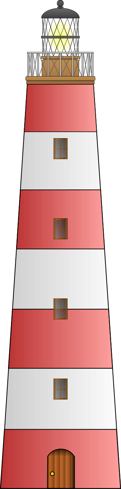
phare
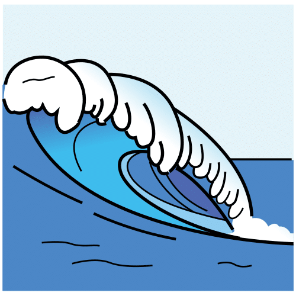
vague
dauphin
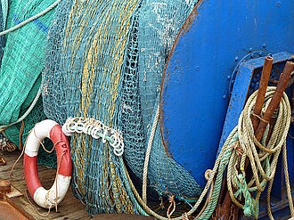
filet
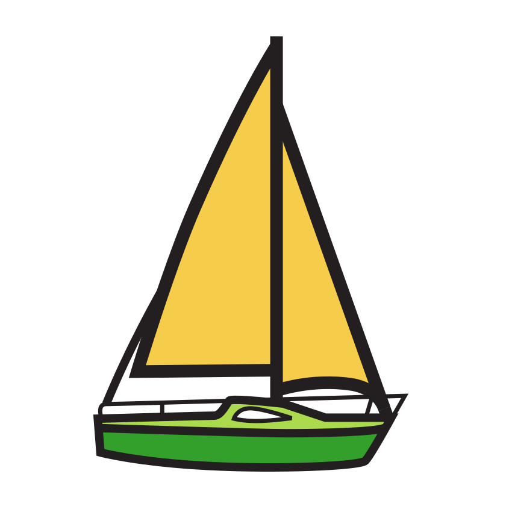
bateau
fusée
2Où est le son [a] ?
Mot
Début
Milieu
Fin
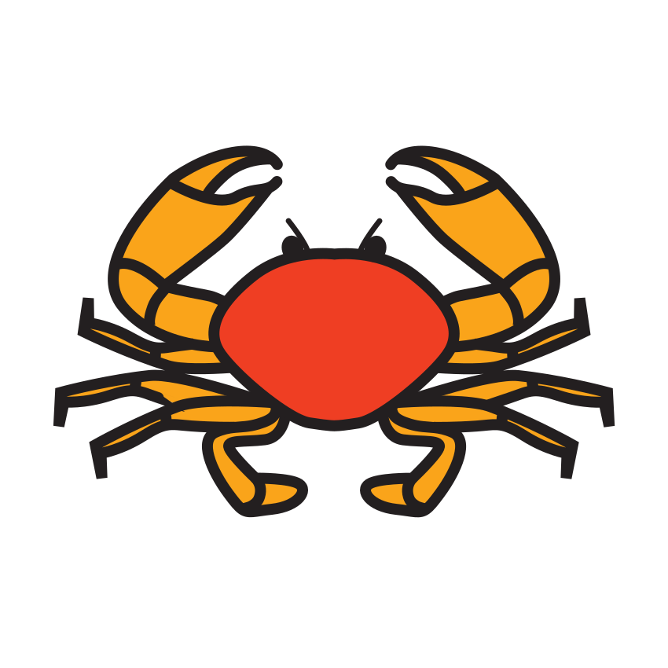
crabe
avion
cinéma
3
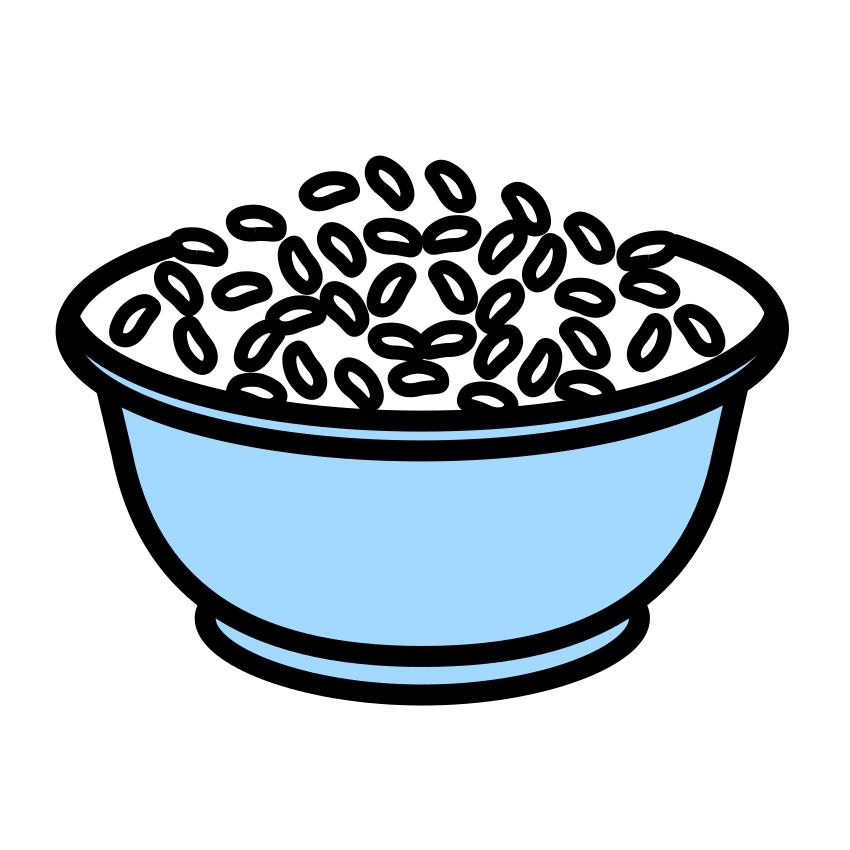
riz : sons ·
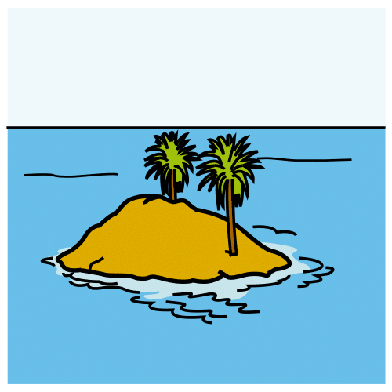
île : sons · mer : sons
Compétence : identifier et localiser des phonèmes — préparation au CP.A ☐ · EC ☐ · NE ☐
Prénom : Date :
Période 5 · Fiche élève 2
Lettres — alphabet (éval. 5.4)
L’alphabet du corsaire
Consigne :1. Écris les lettres qui manquent dans l’alphabet. 2. Relie chaque lettre capitale à sa lettre script. 3. Entoure tous les b en bleu et tous les d en rouge.
1Je complète l’alphabet.
A
B
D
E
G
H
J
K
L
N
P
Q
S
T
V
W
X
Z
2Je relie capitale et script.
E
R
G
Q
D
B
q
b
e
g
r
d
3J’entoure les b en bleu, les d en rouge.
b d p b q d b d b p d b
Compétences : connaître l’alphabet ; associer les graphies ; distinguer les lettres proches.A ☐ · EC ☐ · NE ☐
Prénom : Date :
Période 5 · Fiche élève 3
Écriture — production (éval. 5.5)
Ma carte postale de la mer
Consigne :1. Recopie « Bonjour ! » en attaché, en suivant le modèle. 2. Écris tout seul le mot MER dans les cases, puis un autre mot de la mer que tu choisis. 3. Dessine ta carte, puis signe avec ton prénom en attaché, sans modèle.
modèle : Bonjour ! (en cursive, à la main)
J’écris MER :
Mon mot de la mer :
Ma signature :
La date (modèle au tableau) :
Mon dessin de la mer :
Compétences : copier en cursive ; encoder un mot ; écrire son prénom sans modèle.A ☐ · EC ☐ · NE ☐
Prénom : Date :
Période 5 · Fiche élève 4
Mathématiques — nombres (éval. 5.8)
La grande pêche des nombres
Consigne :1. Compte les poissons du banc (ils sont rangés en deux groupes pour t’aider) et écris le nombre. 2. Complète la bande des bouées jusqu’à 15. 3. Relie chaque nombre à sa quantité.
1Je compte tout le banc de poissons.
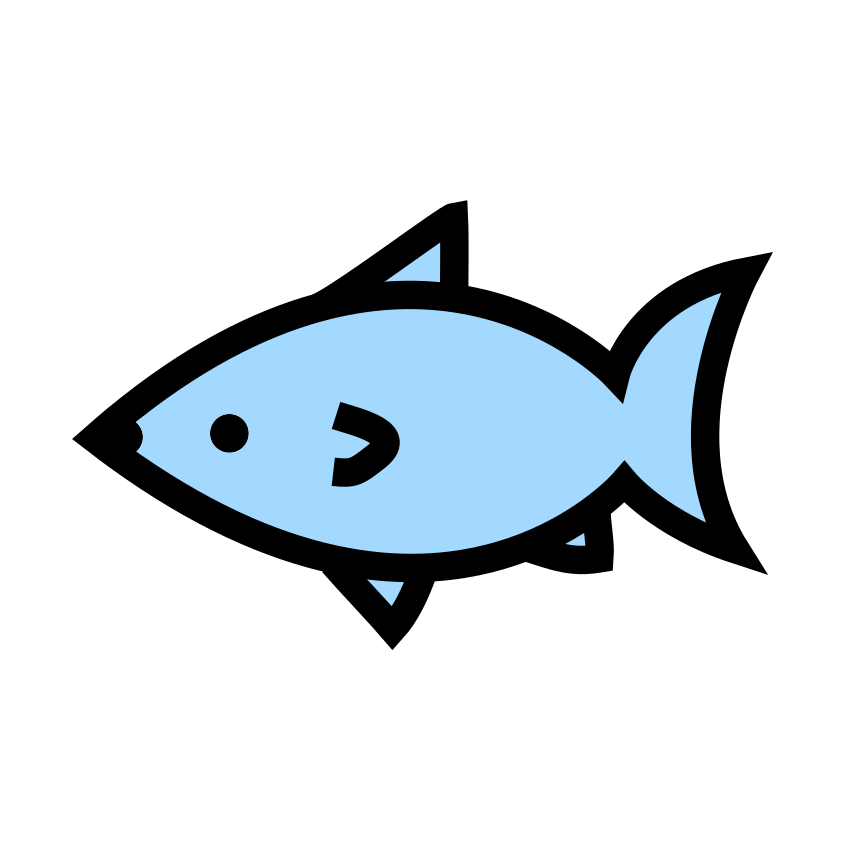
Il y a poissons.
2Je complète la bande des bouées.
1
3
4
6
8
9
11
13
15
3Je relie le nombre à la bonne quantité.
7
10
5
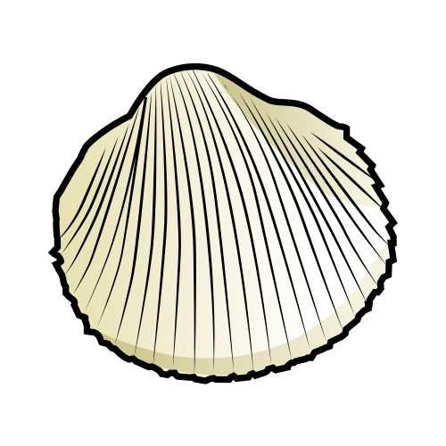
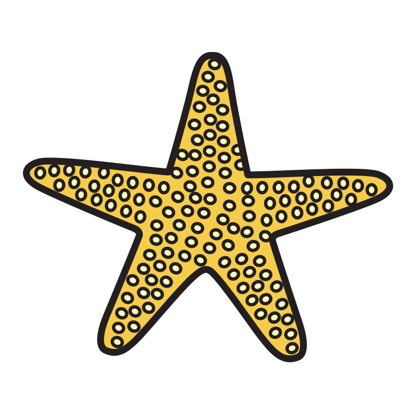
4
5 + = 10 · 8 + = 10 · 3 + 3 = · 5 + 5 =
★ Défi : continue la bande des bouées : 16 · · 18 · ·
Compétences : dénombrer au-delà de 10 ; suite écrite jusqu’à 15 ; associer nombre et quantité.A ☐ · EC ☐ · NE ☐
Prénom : Date :
Période 5 · Fiche élève 5
Mathématiques — problèmes (éval. 5.9)
Les défis de la sirène
Consigne (un défi à la fois) :1. 7 mouettes sont sur le rocher, 3 s’envolent : barre-les et écris combien il en reste. 2. Il faut 2 coquillages dans chaque seau : dessine-les et écris combien il en faut en tout. 3. Léa a 4 crabes ; Tom en a 2 de plus que Léa : dessine les crabes de Tom et écris combien il en a.
Compétence : résoudre des problèmes variés (retrait, groupement, comparaison, partage).A ☐ · EC ☐ · NE ☐
Prénom : Date :
Période 5 · Fiche élève 6
Mathématiques — grandeurs, motifs (éval. 5.11)
Le podium des poissons
Consigne :1. Écris 1 sous le poisson le plus court, puis 2, 3, 4, 5 jusqu’au plus long. 2. Continue le collier de la sirène. 3. Invente ton collier avec un motif qui se répète.
1Du plus court au plus long.
2Je continue le collier (coquillage, étoile, étoile…).
3J’invente mon collier.
Compétences : ordonner 5 longueurs ; poursuivre et créer un motif.A ☐ · EC ☐ · NE ☐
Prénom : Date :
Période 5 · Fiche élève 7
Le monde — le vivant (éval. 5.14)
Qui nage, qui marche, qui vole ?
Consigne :1. Relie chaque animal à sa façon de se déplacer. 2. Entoure en bleu les animaux qui vivent dans la mer, en vert ceux de la ferme.
1Je relie l’animal à son déplacement.
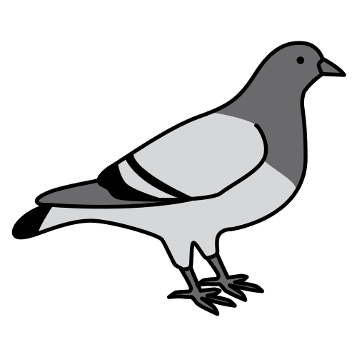
il marche sur le sable
il vole dans le ciel
il nage avec ses nageoires
il nage et respire à la surface
2Bleu = la mer, vert = la ferme.
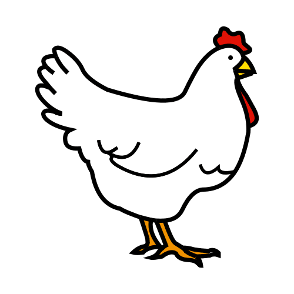
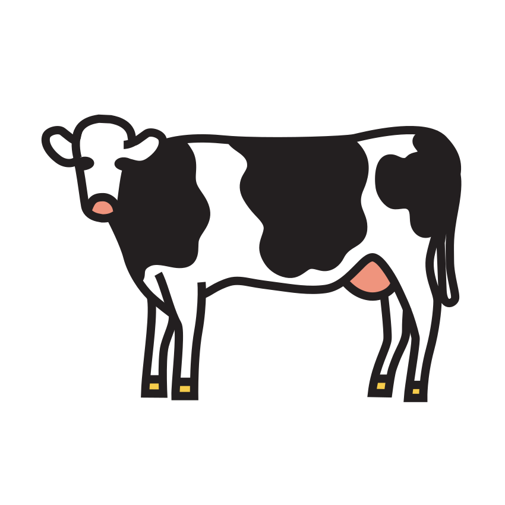
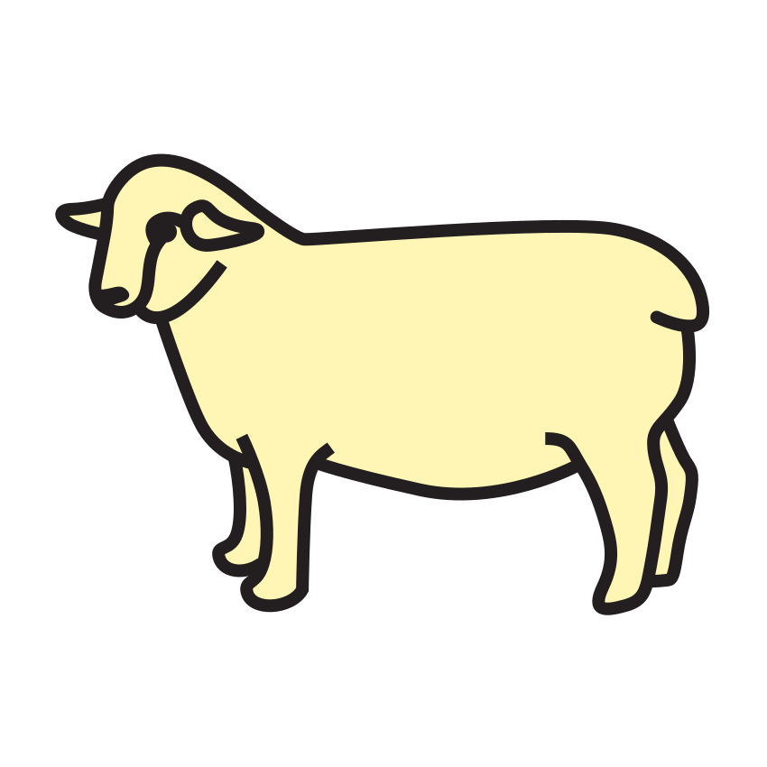
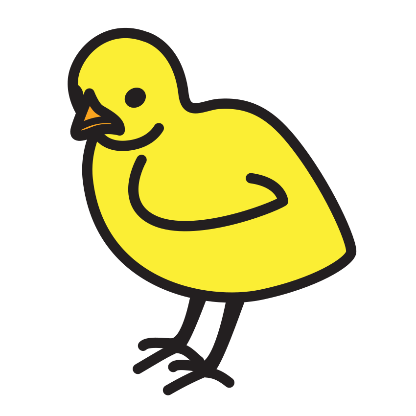
3
Le dauphin respire à la surface de l’eau.
OUI
NON
Le crabe vole au-dessus des vagues.
OUI
NON
Compétences : associer anatomie et déplacement ; classer les animaux selon leur milieu.A ☐ · EC ☐ · NE ☐
Prénom : Date :
Période 5 · Fiche élève 8
Le monde — flottabilité (éval. 5.15)
Ça flotte ou ça coule ?
Consigne :1. Avant l’expérience : mets une croix dans la colonne de ce que tu penses. 2. Après l’expérience : mets une croix dans ce que tu as vu. 3. Dessine le bateau que tu as fabriqué avec ses passagers.
Objet
Je pense…
J’ai vu…
flotte
coule
flotte
coule
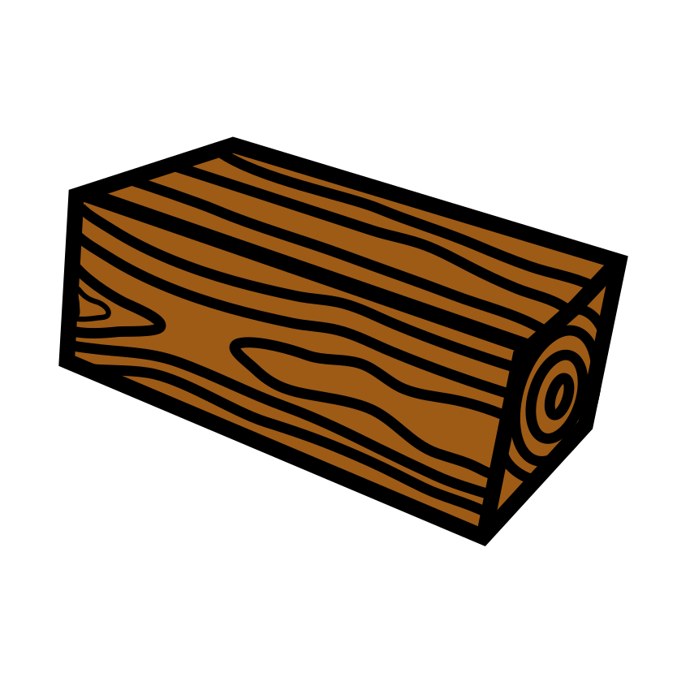
le bois
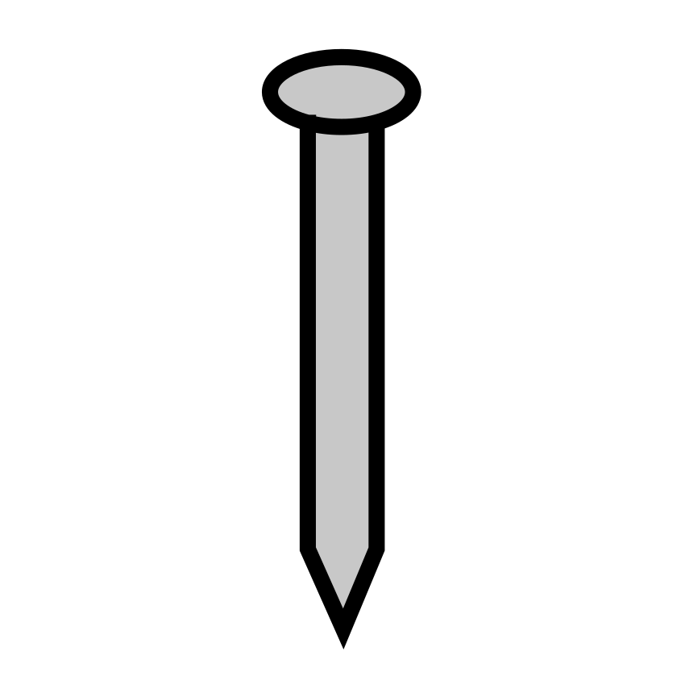
le fer
le caillou
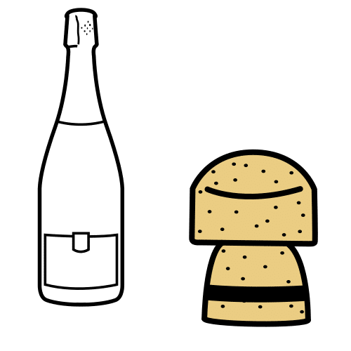
le bouchon
3Mon bateau qui flotte avec ses passagers :
Compétences : prédire puis vérifier la flottabilité ; représenter sa fabrication.A ☐ · EC ☐ · NE ☐
Crédits des images
Les illustrations de ce cahier sont des pictogrammes Mulberry Symbols (Paxtoncrafts Charitable Trust, licence CC BY-SA 4.0, mulberrysymbols.org) et des pictogrammes ARASAAC (auteur : Sergio Palao, propriété du Gouvernement d’Aragon, Espagne, licence CC BY-NC-SA, arasaac.org), complétés des images suivantes. Merci à leurs auteurs et autrices.
filet-peche : Fishing nets at Macduff Harbour - geograph.org.uk - 4046960.jpg — Walter Baxter, licence CC BY-SA 2.0.